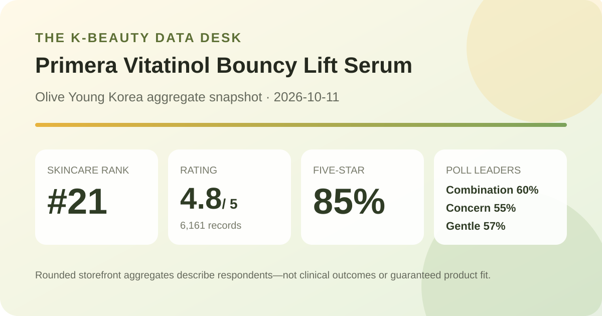
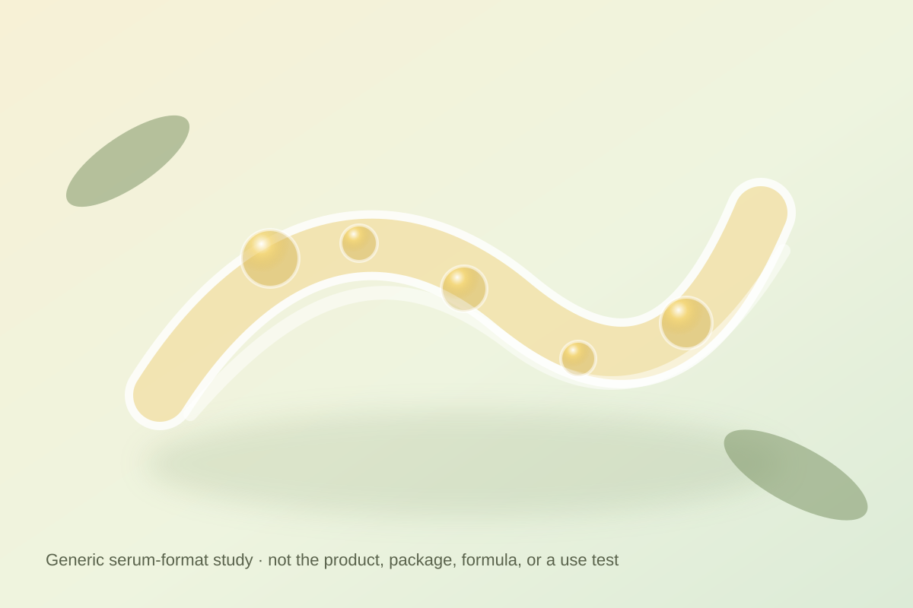

Data captured October 11, 2026. This is an independent analysis of retailer-displayed product information and anonymous aggregate review signals. I did not test the product, and no individual review, reviewer name, product photograph, or user photograph is copied, translated, or paraphrased.

The short version: Primera Vitatinol Bouncy Lift Serum appeared at number 21 in Olive Young Korea's live skincare sales ranking. The product header and detailed review view both displayed 4.8 out of 5 from 6,161 review records. Five-star ratings accounted for 85% of the shown distribution. Combination skin, wrinkle/brightening concern, and gentle were the leading responses in the three shopper polls.
A 4.8 average with 85% of displayed ratings at five stars is a clearly favorable storefront signal. A four-figure review base is large enough that the rounded average is less likely to swing because of a handful of new ratings than it would be on a newly launched listing. Agreement between the header and the detailed review panel also reduces the risk of mixing figures from different interface states.
That does not turn retail feedback into controlled evidence. Olive Young does not display how many purchasers never reviewed, whether prompts or rewards affected participation, how long respondents used the serum, what else was in their routines, or whether every record belongs to the currently promoted 25 g configuration. One score compresses many priorities—texture, scent, packaging, promotion value, finish, and expectations—into a single number. The justified conclusion is that the captured reviewer pool rated the listing favorably, not that the serum will produce the same result for every buyer.
The whole-number shares total 100% here, but they remain rounded interface values. A displayed zero at two stars does not prove that no two-star record exists; a small share can round down. No raw star counts were shown, so this article does not reconstruct or invent them.
Combination skin was the largest displayed response at 60%, followed by dry skin at 32% and oily skin at 8%. This tells us that the captured poll leaned strongly toward combination respondents. It does not tell us that 60% of combination-skin users succeeded, that the serum works best for them, or that someone with dry or oily skin should avoid it.
The poll denominator was not shown and may be smaller than the 6,161 rating total because shoppers can skip optional questions. Nor does the poll provide subgroup satisfaction scores. Representation is useful context for judging whose feedback dominates the aggregate, but it is not a recommendation engine.
Wrinkle/brightening was the leading concern response at 55%, followed by hydration at 26% and soothing at 19%. These labels describe what respondents associated with their feedback. They do not measure wrinkle depth, pigmentation, brightness, water content, barrier function, or redness. Product positioning can influence which label shoppers choose, and the interface does not show a pre-use baseline or comparison group.
The irritation panel showed 57% gentle, 39% ordinary, and 4% felt irritation. The largest group selected the favorable response, yet the ordinary share was substantial and a nonzero group reported feeling irritation. More importantly, this is an uncontrolled perception poll. It cannot establish hypoallergenicity, sensitive-skin safety, or personal tolerance. Frequency, amount, current barrier condition, other active products, allergies, and recent procedures can all change an individual's experience.

The listing identifies the item as a serum, supporting only a broad format description: it is sold as a leave-on skincare step rather than as a cleanser, pad, mist, or cream. I did not dispense, spread, smell, layer, or wear it. I therefore cannot responsibly describe the actual texture as watery, cushiony, sticky, fast-absorbing, fragrance-free, makeup-friendly, or appropriate for a particular season.
The local illustration uses translucent ribbons and small suspended dots to communicate a generic serum concept without copying the product, retailer photography, packaging, campaign art, or customer images. Its pale yellow and green palette is a design choice, not an observation about the formula.
Olive Young's automated recent-review summary classified 92% of its summarized subset as positive. Its displayed categories broadly concerned mild-feeling use, absorption and texture, and moisturizing or firm-feeling impressions. This article uses only those anonymous, retailer-generated aggregate topics; it does not reproduce, translate, or paraphrase any individual review.
The 92% figure describes a recent summarized subset rather than all 6,161 records. Automated summaries can overemphasize repeated wording, flatten disagreements, and inherit bias from whichever records enter the model. “Absorbs well,” “feels gentle,” or “feels firm” are subjective themes, not instrumental measurements. They cannot prove delivery, biological change, ingredient activity, or long-term benefit.
“Vitatinol” appears in the retailer-displayed product name. A coined name can suggest a marketing concept, but it does not by itself verify the full ingredient list, exact concentrations, chemical forms, stability, delivery, or clinical performance. This analysis does not decode the name into assumed percentages or treat it as proof that a particular retinoid or vitamin is present at an effective dose.
For formula-specific decisions, check the current authorized ingredient list and directions for the exact regional item and option. That matters especially when introducing products positioned around vitamin or retinoid concepts, because tolerance can depend on the complete formula, frequency, and other routine steps. Retailer ratings cannot replace label instructions or qualified advice for pregnancy, persistent irritation, a diagnosed condition, or a history of reactions.
The captured page described a 25 g serum available as a single item or promotional configuration. It showed a ₩32,500 reference price and prices from ₩23,500. Options, gifts, coupons, stock, membership benefits, and checkout totals can change quickly. Those figures are a dated Korea-store snapshot, not a permanent value claim or a quote for another country.
Rank 21 means that the listing occupied the twenty-first slot in the selected live skincare sales list at capture time. It does not mean twenty-first best by safety, effectiveness, formula quality, or value. Discounts, bundle design, campaign placement, availability, season, and short-term demand can all affect sales rank.
The captured header and detailed review panel both displayed 4.8 out of 5 from 6,161 records. The star panel showed 85% at five stars. That is favorable retail feedback, not proof of clinical effectiveness.
Combination skin led at 60%, followed by dry skin at 32% and oily skin at 8%. Those are audience shares, not recommendations or subgroup success rates.
No. It is a retailer perception poll with an unspecified denominator and uncontrolled use conditions. The same panel showed 39% ordinary and 4% felt irritation, and personal tolerance can differ.
No. The name does not establish exact ingredients, concentrations, stability, absorption, or therapeutic effect. Check the current label and avoid treating a marketing term as clinical evidence.
No. It is a local, brand-neutral graphic for a generic serum concept and makes no claim about the product's real appearance or behavior.
Source: Olive Young Korea product listing for Primera Vitatinol Bouncy Lift Serum, accessed October 11, 2026. The source is a dynamic retail page; rank, price, availability, options, gifts, counts, percentages, and interface details can change after capture.
This independent article reports displayed aggregate information with explicit limits. It is not sponsored, is not medical advice, and does not replace the current product label or qualified care.
← All K-Beauty Data Desk reviews · Best-seller rankings · Skin-poll representation · About & methodology